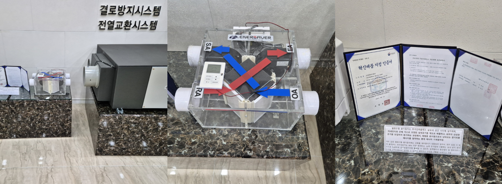
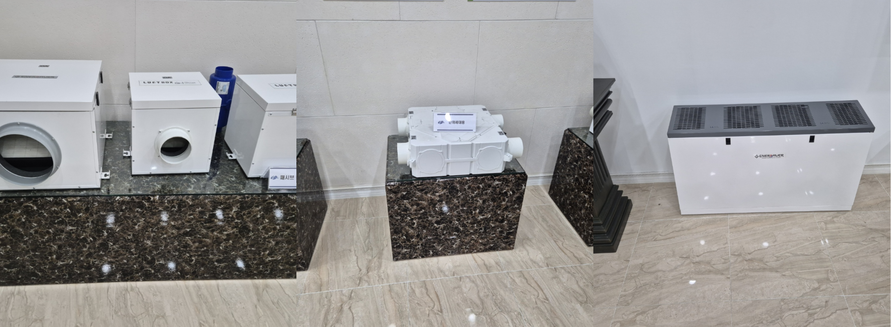
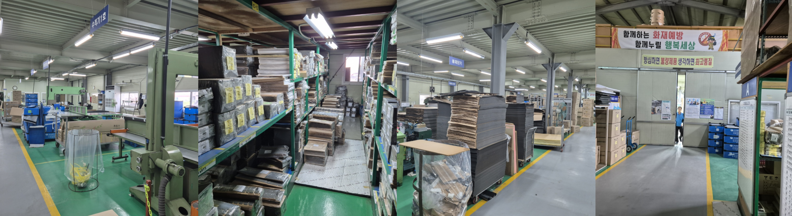
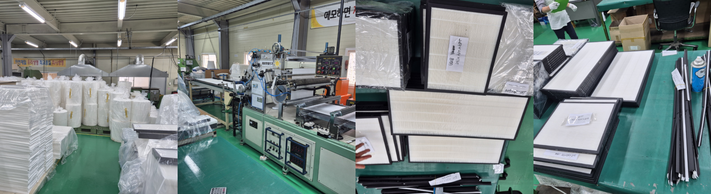
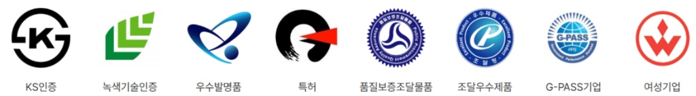

ABOUT 다올웍스
단순 청소가 아닌
제조사의 기술력입니다.
다올웍스는 공기순환기와 필터를 직접 생산하는 공장을 보유한 검증된 기업입니다. 불필요한 중간 유통 과정이 없기에, 관공서와 학교에 타사 대비 30~40% 예산을 절감하면서도 최고 등급의 제품과 딥클리닝을 제공합니다.
- 자사 공장 직접 생산으로 비용 거품 제거
- KS인증, 조달우수제품 등 객관적 품질 검증
- 완벽한 행정 서류 및 시공 이력 리포트 제공
다올웍스 대표 이민재
공기 순환기 생산 공장



공기 순환기 필터 생산 공장



국가가 먼저 인정한 제조 기술력
까다로운 공공 발주 기준을 완벽히 충족하는 다올웍스의 공식 인증 내역입니다.

다올웍스의 약속
제조사의 기술력으로 고객에게 제공하는 3가지 핵심 가치
[이미지: pillar-1.jpg]
비용 절감
경쟁사 대비 최대 30~40% 저렴한 공급가 제안
유지보수 서비스 포함 계약으로 전체 운영비 절감
[이미지: pillar-2.jpg]
성능 및 인증
공기여과 효율, 압력손실, 내구성 등 시험성적서 제출 가능
→ 품질·성능의 객관적 검증 자료 확보
[이미지: pillar-3.jpg]
공기질 기준 대응
국내 실내공기질 유지·관리 기준에 따른
미세먼지 및 건강관련 오염물질 관리 지원 가능